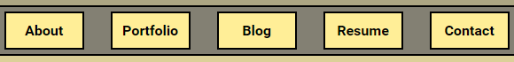

Margins, Borders, and Padding - Oh My!
Sunday, January 17, 2016
Margins, borders, and padding - what are they? What do they do? And how do you know which one you're supposed to use and when?
Margins, borders, and padding are all different methods of adding space between elements in an HTML layout. While they are all used to achieve the same effect, each method has its own unique behaviors. That means that it is highly unlikely that you can achieve your desired layout using a single method - instead, it's more likely that you'll need to use a combination of all three to create a clean and professional layout.

Consider the box model, shown here. The box model shows how these three properties are organized around the content. Working from the content outwards, the properties are always displayed in the following order: padding first, then the border, then finally the margin. You can specify the size of each of these properties as a constant value for each side of the content, or you can specify different values for each property for every side of the content. More specifically, each property can take up to four arguments: top, right, bottom, and left. This allows you to zero out the margins on the top and bottom, but specify larger margins to the left and right, for example.
Let's start with the border, since that's probably the easiest to understand. The border is a region that delineates the padding from the margin. The border can be set to a specific color, size, and line style. This will give you a visible line around your content that divides it visually from other elements in the layout. With no padding, this border will butt up directly against the content it is surrounding. And with no margins set, this border will butt up directly against any surrounding elements.
Padding is used to add transparent space immediately around the content inside the border. Because it is transparent, this means that the padding takes on the background color of the content. This allows you to clear a set amount of space around the content and push the border away from your content. You can clearly see this effect in most button styles - the amount of space between the text and the edge of the button is defined by padding.
Margins are used to add transparent space outside of the border. This won't visually change the size of the element containing your content, but it will extend the size of your element with transparent space so it will not appear to butt up against the edge of another one. Margins can also be calculated automatically by the browser, allowing for tricks such as centering an element horizontally regardless of the browser window size. Using margins is a very important part of making your page easier to understand. Clear visual space between elements separates your information and lets the viewer focus on specific parts of the page without becoming overwhelmed.
Now, consider the navigation bar we've used on this site as an example:
Padding is responsible for the space between the button text and the interior edge of the border. Note that this increases the clickable area for the user, allowing for an easier user experience. The border has a specified color and width to highlight the distinction between the clickable button and the nav bar itself. Finally, margins are used to maintain an even spacing between the buttons, as well as creating space on the top and bottom of the buttons to widen the nav bar.
Did all of that make sense? It's a lot of information to take in all at once, so I hope you didn't space out reading this!